Су-30СМ · тест 3
Игровые кадры и видео из новой сборки. Нос и исходные пропорции сохранены. Сглаживание поверхностей выключено.
Запуск: распакуйте Game_Win32_Win64.zip целиком в новую папку и дважды нажмите Play_Su30SM.bat. Остальные самолёты доступны через прежние стартовые файлы и меню. Этот отчёт открывается двойным щелчком по index.html, без интернета.
Что исправлено
- Ниша передней стойки раньше строилась до высоты фонаря и выглядела как чёрные заглушки. Теперь она находится под полом, переднее шасси укладывается под кабиной.
- Заполнена задняя часть интерьера, сохранено прозрачное стекло; исправлено смешивание прозрачных поверхностей в OpenGL1.
- Разделены основные створки и колёсные щитки, заделаны отверстия панелей, добавлены узкие посадочные кромки. Убраны найденные пересечения новых щитков.
- Добавлены внутренняя ниша и привод воздушного тормоза; размер самого тормоза сохранён.
- Углублены каналы воздухозаборников и выхлопные горловины; увеличено перекрытие лепестков сопел, ограничено чрезмерное раскрытие, добавлено синее пламя.
- Продлены скрытые корни переднего оперения, затемнены шины и ступицы. Опорные точки скорректированы на 4 см.
- Авиационное вооружение отключено во всей игре по запросу пользователя.
Управление
G — шасси; B — воздушный тормоз; Alt+5 — фонарь на земле; Q/A — тяга; Tab — форсаж. F1 — кабина, F2 — внешний вид. ЛКМ/ПКМ + движение мыши — обзор в кабине; дважды Пробел — взгляд вперёд и обычный масштаб.
Кадры из игры
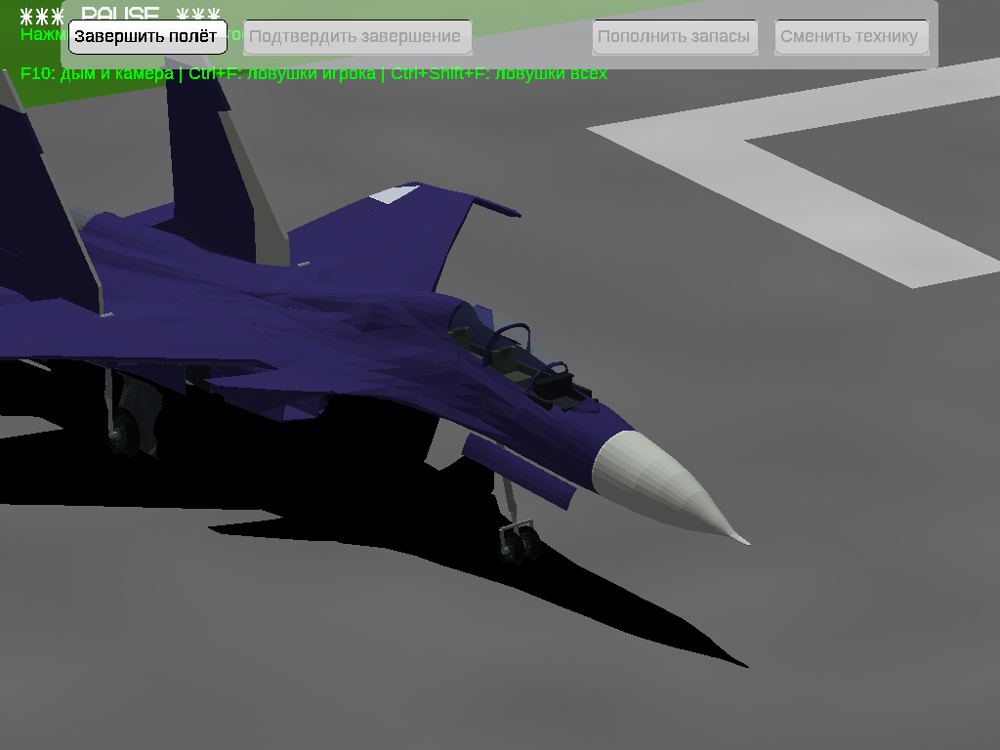
Закрытый прозрачный фонарь: ниша шасси больше не выступает через стекло.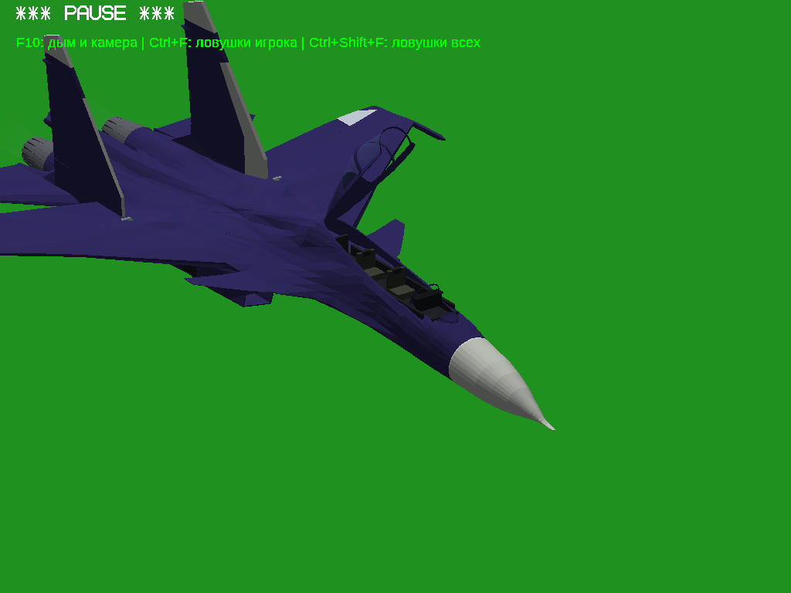
Открытый фонарь: видны два кресла и борта, задняя часть кабины закрыта.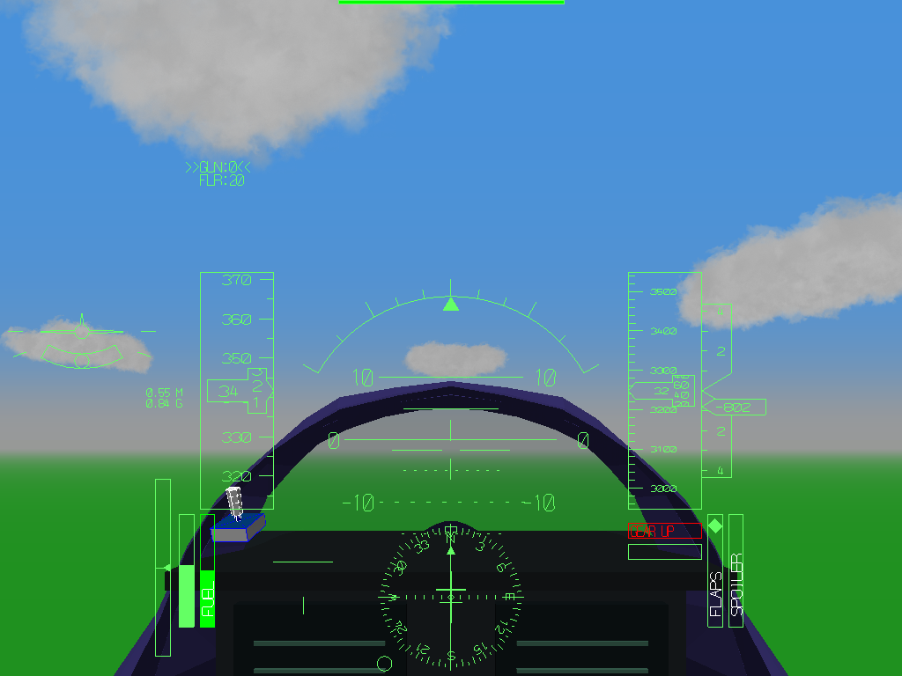
Вид пилота: наружный мир, рама и приборы. Интерьер условный.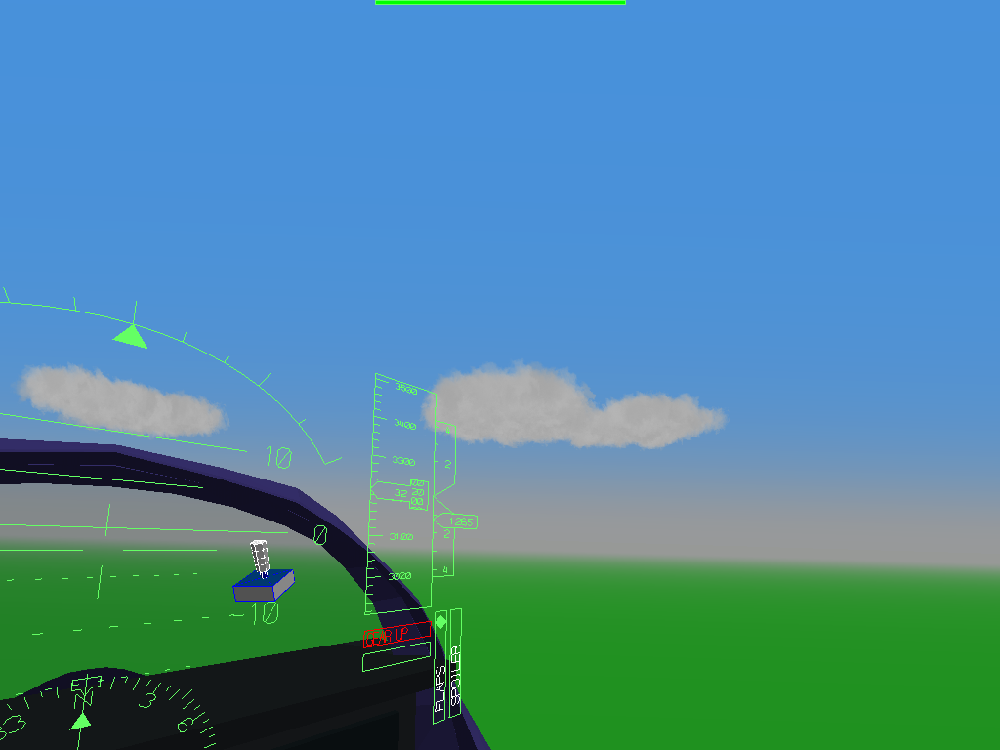
Поворот взгляда левой кнопкой мыши.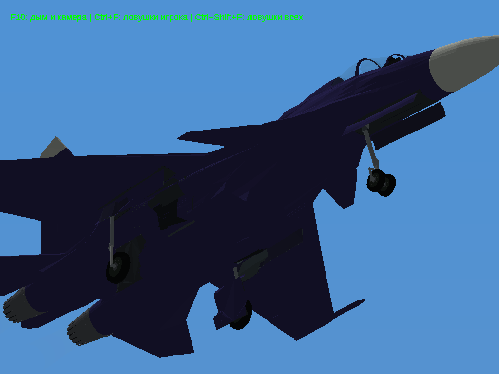
Раздельные длинные створки и колёсные щитки в выпущенном положении.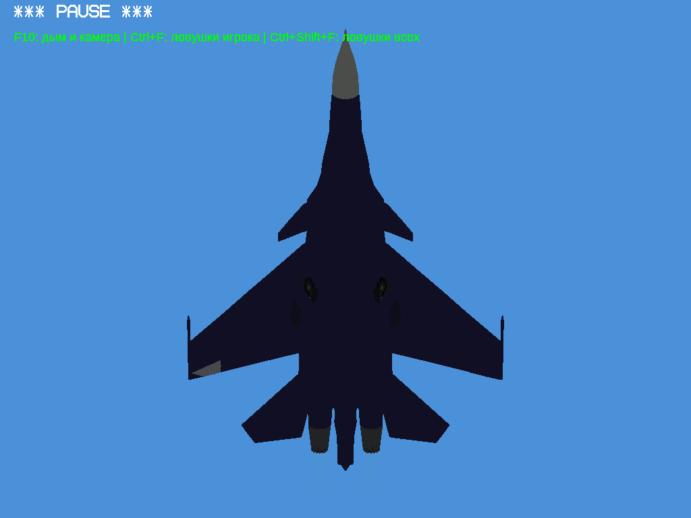
Нижняя часть при убранных шасси.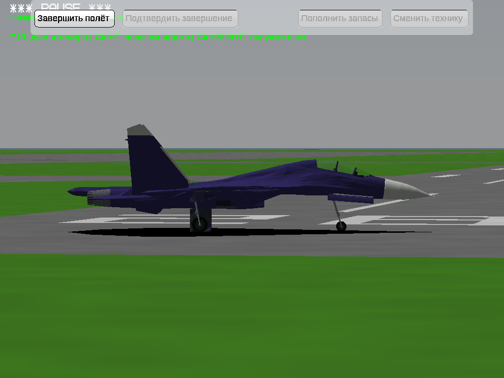
Положение колёс на аэродроме, вид сбоку.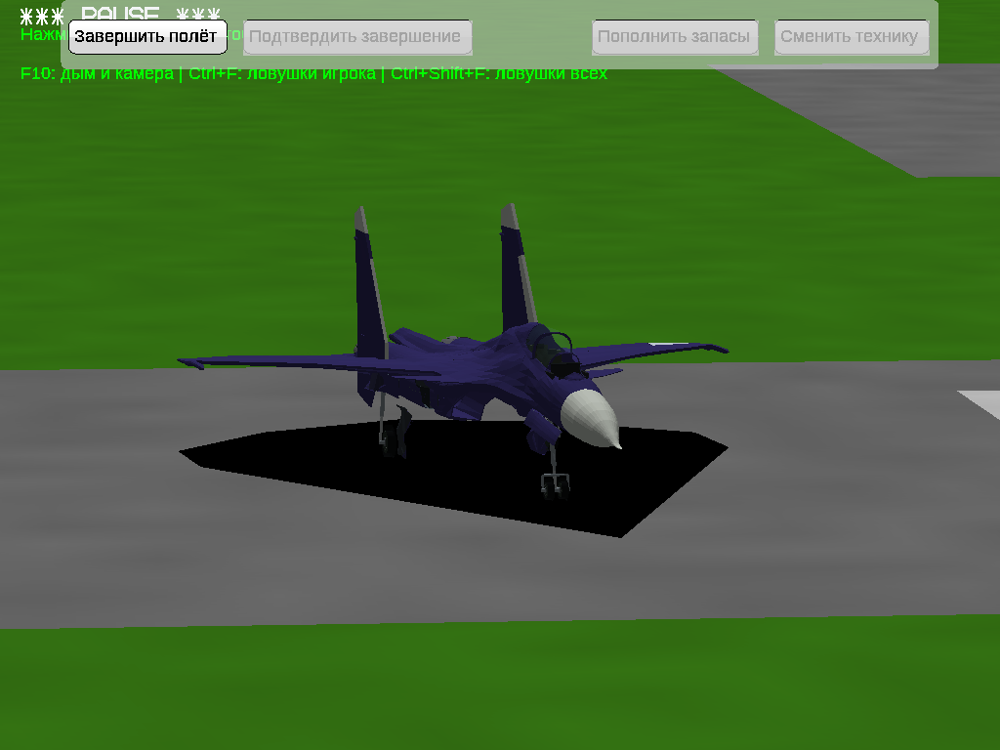
Передняя и основные стойки, вид спереди.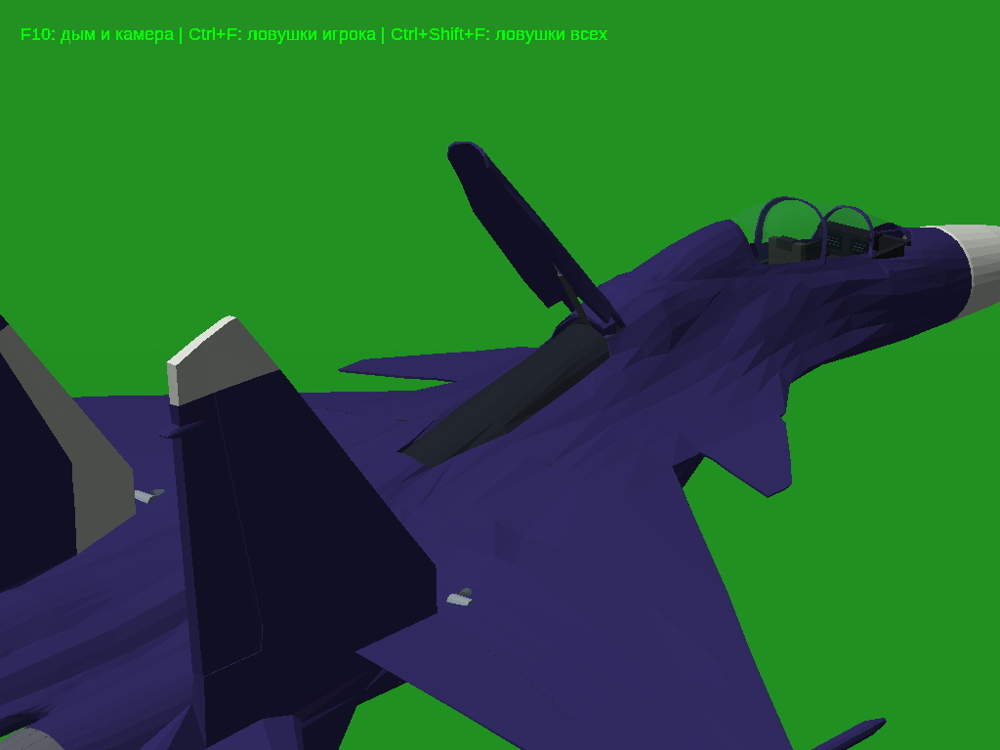
Открытый воздушный тормоз: внутренняя поверхность и телескопический привод.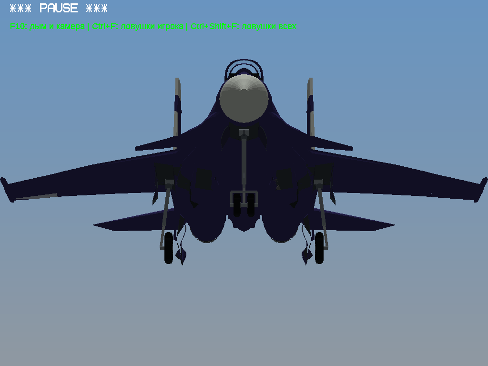
Входы двигателей: плоские мешавшие вставки заменены углублёнными каналами.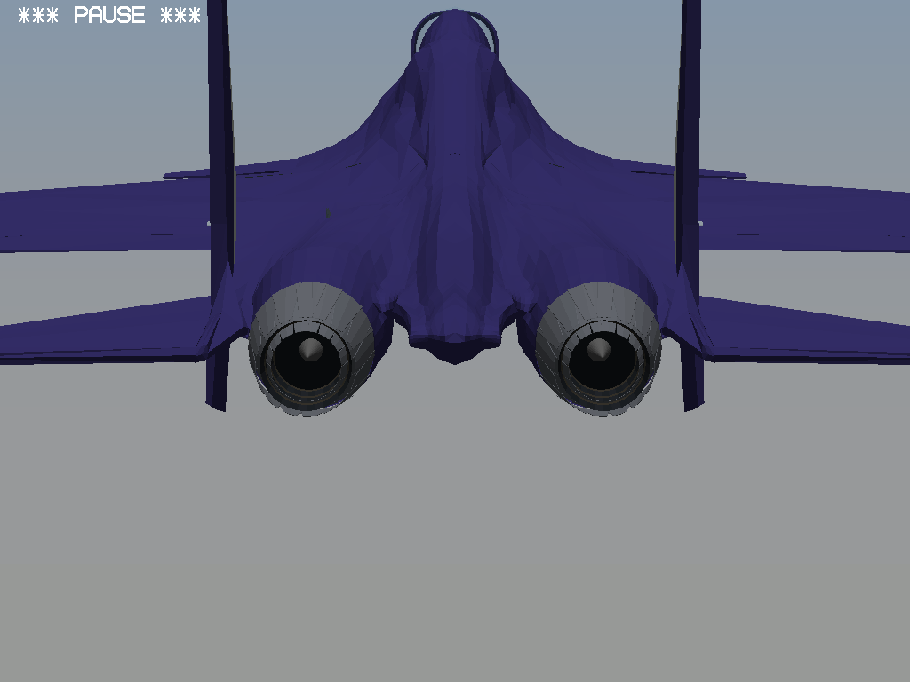
Два одинаковых сопла и углублённые горловины.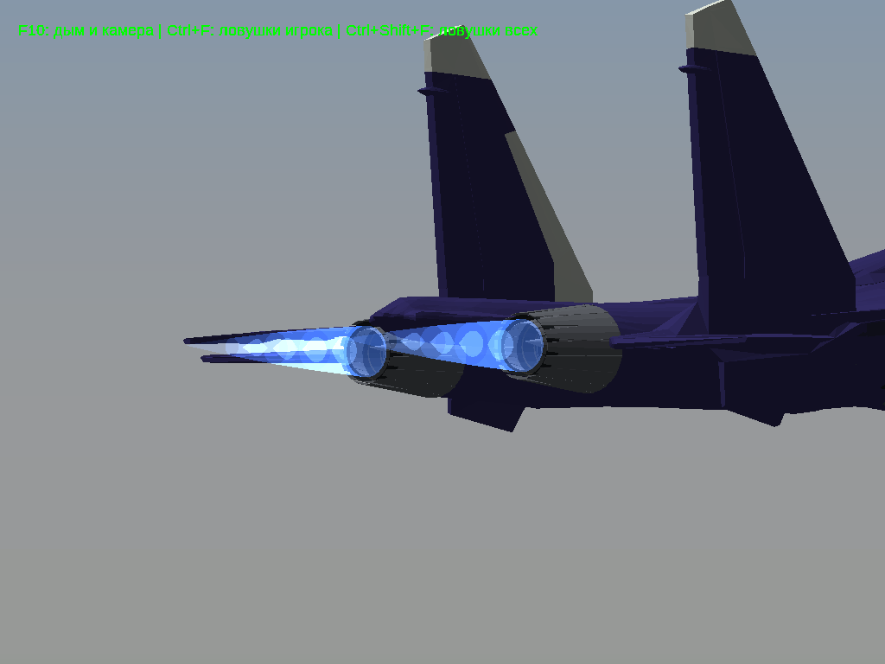
Синее пламя форсажа с полупрозрачными ядрами.Работа механизмов
Реальные команды G: выпуск и уборка.Открытие и закрытие фонаря на земле, Alt+5.Открытие и закрытие воздушного тормоза, B.Изменение тяги, форсаж и движение одинаковых сопел.Обзор мышью и возврат двойным Пробелом.
На чём основаны изменения
Сборочная инструкция Су-30СМ «Звезда», 7314: створки — страница 5, фонарь — 6, воздушный тормоз и опора — 4. Это схема масштабной модели, не заводской размерный чертёж. Пропорции носа не изменялись. Кинематика, внутренняя кабина и диапазон сопла остаются игровым приближением; аэродинамика пока основана на Су-27.
Проверка и исходники
Выполнены короткие целевые проверки шасси, фонаря, тормоза, сопел и камеры. Отдельно проверены шесть положений новых колёсных щитков: непредусмотренных контактов в проверенных парах не найдено; касания сомкнутых кромок записаны отдельно. Полный аудит всех внутренних деталей самолёта не заявляется. Результат проверки Windows32 и ссылки/контрольные суммы архивов — в STATUS.json.
Исходный GLB: HappyMexicano7, лицензия CC BY 4.0. Уведомления, полный соответствующий движок, конвертер, оригинальная модель и история находятся в Sources.zip; лицензии также сохранены в игре. Старые версии не перезаписывались.